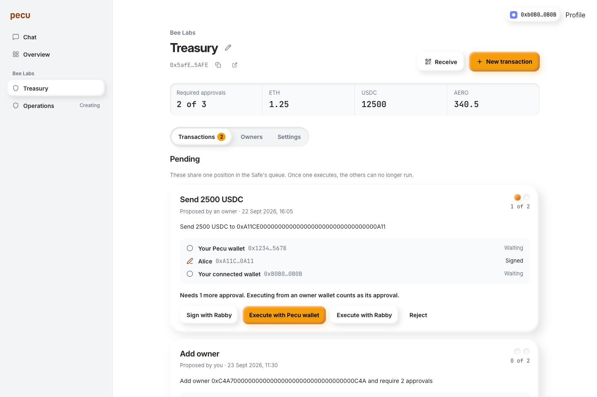
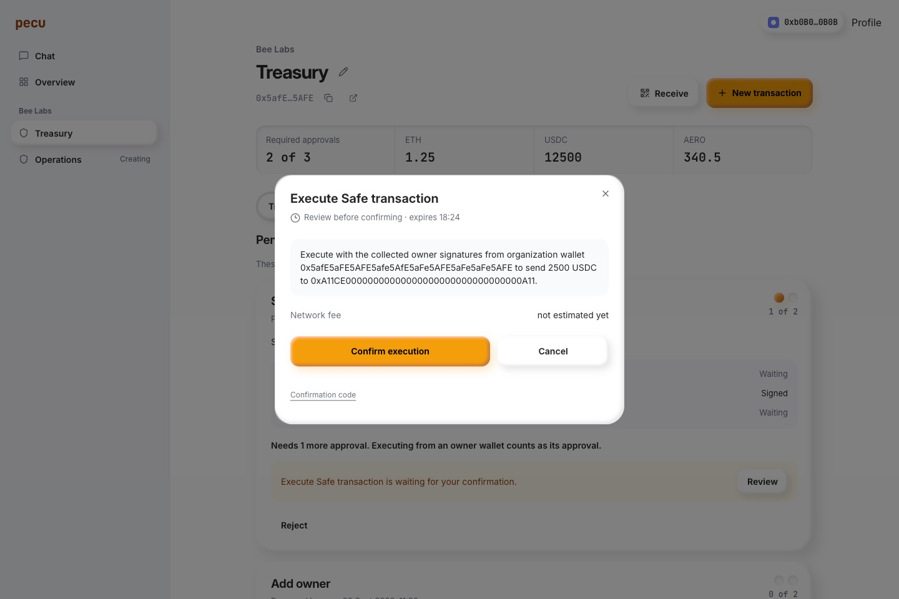
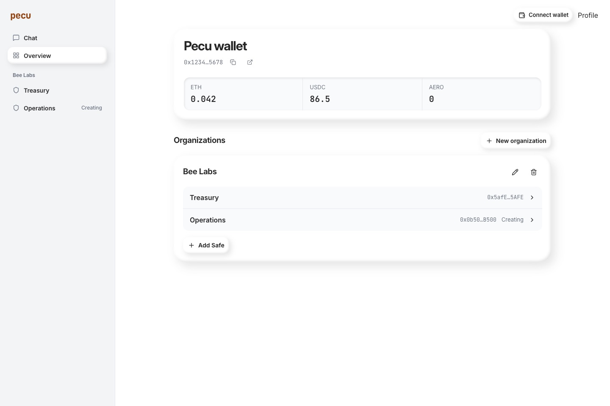
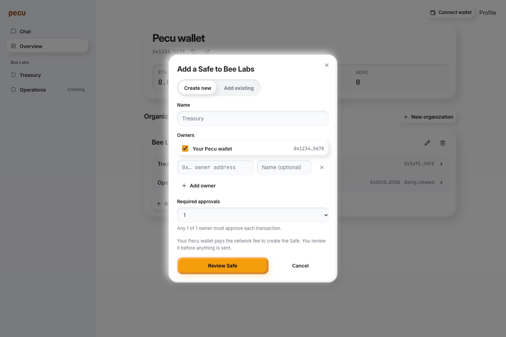
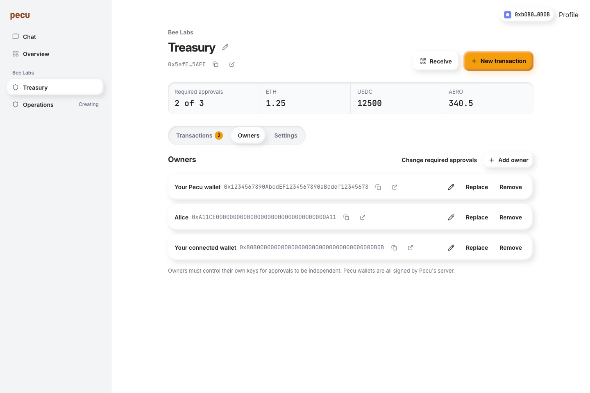
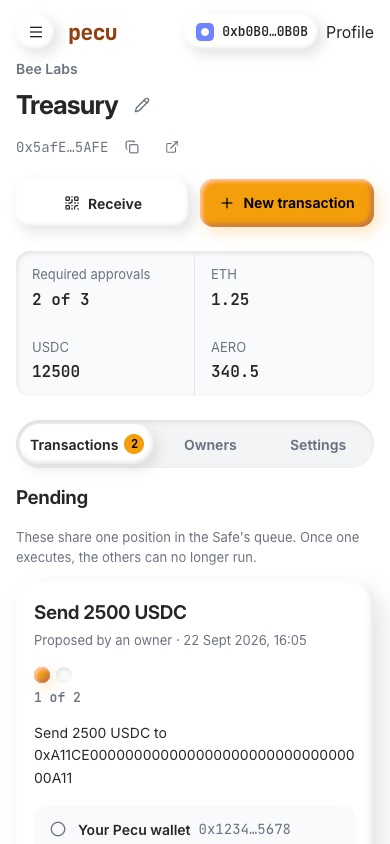

Pecu Safes profile
pecu.app/profile is a new page for Safe wallets with several owners. It is built and tested, not deployed.
What is there
- Organizations group Safes and keep names for owner addresses.
- Create a Safe with your Pecu wallet, a connected browser wallet and any other address as owners, and pick how many must approve. Or add an existing Safe 1.4.1 by address.
- Each Safe shows balances, a Receive QR, a shared queue, owners and settings.
- The queue shows approval beads, every owner's status and only the actions your wallets can take.
- Browser wallets (Rabby, MetaMask, any EIP-6963 wallet) sign for free and can execute directly.
- Pecu wallet actions (create, approve, execute, spend from a limit) open the existing transaction card. YOLO never applies here.
- Owners tab: add, remove or replace an owner, change required approvals. Settings: spending limits, enabled modules, remove from profile.
- Chat parity: Safe proposals made in chat join the same queue. A new
safe_queue tool lets X Chat read it and execute with the collected signatures.





How it works
- One typed contract,
apps/pecu/src/safe-profile-contract.ts, shared by the Durable Object, the web proxy and the page.
SafeProfile in the Durable Object stores organizations, Safes, proposals and signatures in SQLite. Proposals are shared by Safe address.- Page reads use one Multicall3 call for owners, threshold, nonce, modules, balances, approvals and limits. Every write still goes through evmSDK in the sandbox and Pecu's plan checks.
- A signature is saved only after it recovers to a current owner at the current nonce.
- Pecu wallet execution sends exactly the threshold of signatures: its own approval when it is an owner, then on-chain approvals, then saved signatures.
- History is marked executed only from a receipt with the Safe's
ExecutionSuccess event for that transaction.
Checks
- 433 Pecu tests pass, 7 of them new for the profile, run against a simulated Base RPC and the real confirmation path.
- 60 web tests pass, 3 new for execution signatures, queue actions and input errors.
- Design check, both typechecks, the web build, four Worker dry-runs and the docs build pass.
- Walkthrough on a fixture page with fictional data and a simulated wallet, desktop and phone. No real transaction was sent.

Not done
- Not deployed and not committed. Deploy order:
pecu Worker, then aero-stocks, then pecu-app for the /profile route.
- A connected browser wallet can't spend from its own spending limit yet. Only the Pecu wallet can.
- Roles, passkey owners and sponsored gas stay in chat and evmSDK.
- Run one live 2-of-2 on Base with a few cents before telling users.